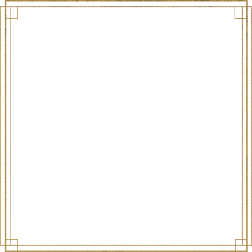

Fabricante de varitas
Garrick Ollivander
La tienda de varitas ha funcionando hasta que el señor Ollivander desapareció en el verano de 1996. Fue descubierto por Harry, Ron y Hermione y rescatado por el elfo doméstico Dobby.
Había sido secuestrado por mortífagos por orden de Voldemort.
Ollivander a partir de entonces le cuenta a Harry sobre la Varita de Saúco y cómo una varita, le entrega su lealtad.

Harry Potter
Madera
Acebo
Longitud
25 cm
Nota
"Hermana" de la varita de Voldemort. Las plumas de fénix en el núcleo son ambas de Fawkes. Rota mientras huía
en el Valle de Godric. Reparada con la Varita de Saúco.
Hermione
Madera
Vid
Longitud
27 cm
Nota
Esta varita fue confiscada cuando el trío fue capturado por carroñeros
Ron
Madera
Fresno
Longitud
30,5 cm
Nota
Esta vieja varita le pertenecía anteriormente al hermano mayor de Ron, Charlie Weasley. Fue gravemente dañada después de un enfrentamiento con el Sauce Boxeador.